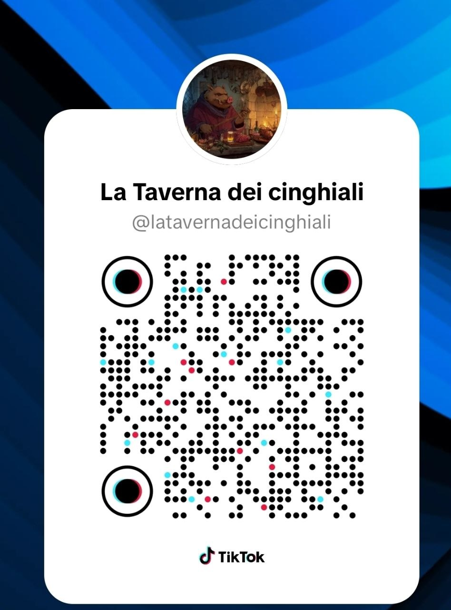

La Taverna apre i social: TikTok, YouTube e un canale per i Cinghiali
Da oggi la taverna ha quattro porte aperte verso il mondo, oltre a quella principale su Twitch. Tre canali pubblici per i contenuti, e un canale dedicato per chi vuole stare al tavolo con noi tutti i giorni.
Sono andati live in questi minuti i profili ufficiali della Taverna dei Cinghiali su TikTok (clip dalle live, momenti memorabili, comedy di Re Kliff), YouTube (VOD lunghi, riassunti settimanali, eventuali tutorial) e il canale dei Cinghiali (chiacchiere a freddo, sondaggi, annunci pre-live, candidature per le partite di gruppo). Sono tre piazze diverse con tre tipi di pubblico, ma la taverna e' una sola.
Aspettati i primi contenuti nei prossimi giorni. Twitch resta la casa principale, dove l'oste apre il fuoco al tramonto.

Inquadra il QR per seguirci su TikTok
Apri la fotocamera, inquadra il codice, e il profilo si apre senza dover digitare nulla. Comodo per condividere la taverna offline — al pub, ai raduni, con chi non ha voglia di scrivere @ su una tastiera.
Twitch follow + qualsiasi di questi canali = non perdi nessuna apertura della taverna. Per chi entra in live e vuole partecipare alle storie del gioco, restano le donazioni gia' attive sul canale.